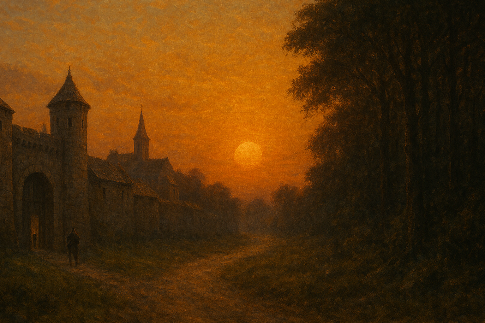

Chapter 2: Before Sunset
Curse of Vowalon

Curse of Vowalon
15048.7.19
經過了一晚的睡眠，冒險者們於 Vowalon 醒來。
冒險者們來到了勞迪俱樂部吃早餐，並打聽更多消息。
早餐後，冒險者們也拜訪了 Warren 家，並前往 Samick 的墓前簡單致意。
鎮長夫人 Jasmine 和冒險者們談妥並簽了契約，委託冒險者們前往 Wescoe 鎮，將鎮上的魔法師 Grenland 帶回 Vowalon，好讓他來幫忙解決詛咒的問題。鎮長 Daryl 先給了每名冒險者 50 枚金幣，並承諾在他們歸來後，再付給他們各 150 枚金幣。
冒險者們參與了 Father Kaulton 主持的祈禱儀式，隨後進入了寂靜殿，與 Father Kaulton 進行了談話，也透過殿內的學徒 Kai 認識了寂靜殿的環境。
在勞迪俱樂部用餐後，冒險者們到 Dawkin’s Shop，Paladin、Midori 和 Samael 買賣了點武器，Usioni 和 Tai Tai 我還要也請託老闆 Graham 幫忙鍛造強化自己的武器。
接著，冒險者們到了對街的巴姆的雜貨店。除了一個 Tai Tai 我還要買下的神秘項鍊外，大家似乎沒有特別想買的物品。
日落前離開沃瓦倫鎮時，Midori 從遠方看見了一個人影，便跑了過去，好一陣子才回到鎮門口。因為 Midori 沒有解釋清楚的理由，Usioni 起頭的非人類夥伴們和 Midori 起了點小的衝突。
守門的兩位衛兵向冒險者們詢問了名字，冒險者回答道：「我們是『台北市議員』」。接著，他們便步向了神秘的嚎叫森林……